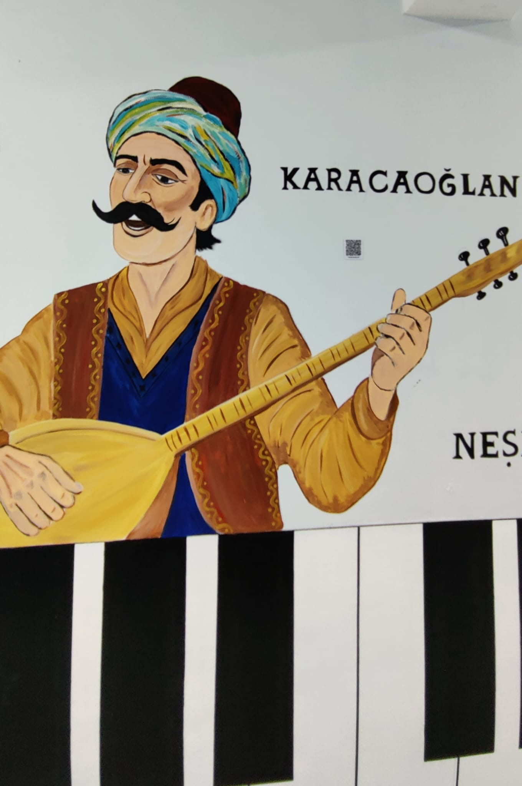

KÜLTÜR SANAT
KARACAOĞLAN
Doğanın ve aşkın sözcüsü
Karacaoğlan, 17. yüzyılda Anadolu'da yaşamış, Türk halk şiirinin en sevilen ve en çok bilinen ozanlarından biridir. Göçebe bir hayat sürmüş, Anadolu'yu adım adım dolaşmış ve gördüğü güzellikleri, yaşadığı duyguları şiirlerine taşımıştır. Onun şiirleri, halkın içinden çıkan, süsten ve yapmacıklıktan uzak, doğrudan kalbe seslenen bir sese sahiptir.
Karacaoğlan'ın şiirlerinde aşk en önemli temadır. Ancak onun anlattığı aşk, ulaşılamaz ya da soyut bir duygu değil; çok canlı, neşeli ve hayatın içinden bir aşktır. Sevdiği güzelleri, onların saçını, gözünü, yürüyüşünü büyük bir coşkuyla anlatır. Ayrılık, özlem ve sevda acısı bile onun dizelerinde umutsuz bir karamsarlığa değil, hayata duyulan güçlü bir bağlılığa dönüşür.
Doğa, Karacaoğlan'ın sanatında sadece bir arka plan değil, âdeta şiirin ana karakterlerinden biridir. Dağlar, pınarlar, yaylalar, açan çiçekler, esen rüzgârlar onun dizelerinde can bulur. Karacaoğlan, duygularını doğayla bütünleştirerek anlatır. Bir bahar sabahının güzelliği ile sevginin neşesi onun şiirlerinde birbirine karışır. Doğaya bu kadar yakın olması, şiirlerinin yüzyıllar boyunca taze kalmasını sağlamıştır.
Onun dilindeki sadelik ve müzikalite çok güçlüdür. Karacaoğlan, halkın konuştuğu dili, deyimleri ve günlük kelimeleri ustalıkla kullanır. Şiirleri genellikle hece ölçüsüyle ve dörtlükler hâlinde yazılmıştır. Bu biçimsel sadelik, onun sözlerinin kolayca ezberlenmesini, dilden dile dolaşmasını ve türkü olarak söylenmesini sağlamıştır.
Karacaoğlan'ın bugüne kadar sevilmesinin nedeni, insanın en temel duygularını sade ve etkileyici biçimde dile getirmesidir. Onun şiirleri, okura doğanın canlılığını ve aşkın coşkusunu hissettirir. Karacaoğlan bize, halk edebiyatının yalnızca geçmişe ait bir miras olmadığını; içten bir sözün yüzyıllar sonra bile insanlara ulaşabileceğini gösterir.
Karacaoğlan'ın şiirlerinde aşk en önemli temadır. Ancak onun anlattığı aşk, ulaşılamaz ya da soyut bir duygu değil; çok canlı, neşeli ve hayatın içinden bir aşktır. Sevdiği güzelleri, onların saçını, gözünü, yürüyüşünü büyük bir coşkuyla anlatır. Ayrılık, özlem ve sevda acısı bile onun dizelerinde umutsuz bir karamsarlığa değil, hayata duyulan güçlü bir bağlılığa dönüşür.
Doğa, Karacaoğlan'ın sanatında sadece bir arka plan değil, âdeta şiirin ana karakterlerinden biridir. Dağlar, pınarlar, yaylalar, açan çiçekler, esen rüzgârlar onun dizelerinde can bulur. Karacaoğlan, duygularını doğayla bütünleştirerek anlatır. Bir bahar sabahının güzelliği ile sevginin neşesi onun şiirlerinde birbirine karışır. Doğaya bu kadar yakın olması, şiirlerinin yüzyıllar boyunca taze kalmasını sağlamıştır.
Onun dilindeki sadelik ve müzikalite çok güçlüdür. Karacaoğlan, halkın konuştuğu dili, deyimleri ve günlük kelimeleri ustalıkla kullanır. Şiirleri genellikle hece ölçüsüyle ve dörtlükler hâlinde yazılmıştır. Bu biçimsel sadelik, onun sözlerinin kolayca ezberlenmesini, dilden dile dolaşmasını ve türkü olarak söylenmesini sağlamıştır.
Karacaoğlan'ın bugüne kadar sevilmesinin nedeni, insanın en temel duygularını sade ve etkileyici biçimde dile getirmesidir. Onun şiirleri, okura doğanın canlılığını ve aşkın coşkusunu hissettirir. Karacaoğlan bize, halk edebiyatının yalnızca geçmişe ait bir miras olmadığını; içten bir sözün yüzyıllar sonra bile insanlara ulaşabileceğini gösterir.
Anahtar Kavramlar: Aşk, doğa, sade dil, halk şiiri, Anadolu
Düşündüren Soru: Karacaoğlan'ın şiirlerinde doğa neden yalnızca arka plan değil, duygunun bir parçası gibidir?